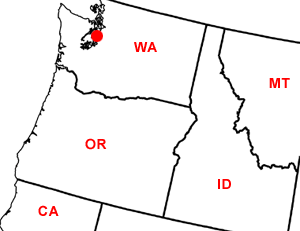

Day Thirty-One
Vashon Island and Seattle, WA
Date: 07/11/2002
Distance: 0 miles
Weather: Sunny high 80's.
A great night's sleep near plumbing at Sophia's house in Vashon Island. Sophia's family has a great plot of land to go with their home and Ogden was able to wander about with Sophia's two dogs. While she played, the three of us went grocery shopping. We came home and made some "unique" waffles for breakfast.
We then ventured on the ferry to West Seattle, and then the bus to Pioneer Square in downtown. Our first stop was in the Elliot Bay bookstore. It is a fun and full place, brimming with both books and good humor. We started to look at some travel books about Canada for our journey back east. We stopped by the underground Seattle information (an earlier version of this city burried below), and then to Pikes Place fish market for fresh sushi. It was scrumptious!
Inspired by our lunch we headed to the aquarium. There we saw two OMNI shows (we both really like these and go every chance we can), one on the eruption of Mt. Saint Helens, and the other on Extreme Sports.
After the movies, Sophia went to class, and Corin and Jared explored downtown. This included a trip to Starbucks, a walk under a fountain, and finally finding the way to the passanger ferry. Back on Vashon we had dinner at Fred's Homegrown, which was serving Chinese food, since it was a Thursday.